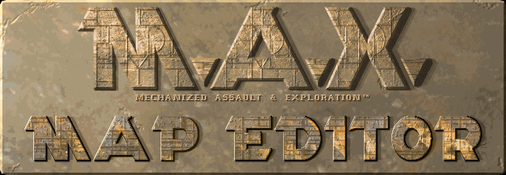

Welcome back M.A.X. Commanders!
I present the announcement of M.A.X. Map Editor – the ultimate open-source tool for crafting custom maps for the classic M.A.X.: Mechanized Assault & Exploration.
I started this project to fulfill our all-long dreams of assault and exploration of an unlimited number of new planets and regions where we could try new tactics and enjoy exploration like it was the first time.
The main goal of this project is to provide an intuitive and enjoyable mapping experience for all M.A.X. enthusiasts.
with 🖤 for M.A.X. | maXimum map making
The editor is a native Rust application (wgpu + winit) for Linux and Windows — portable, no installation needed.
Working today:
Planned next:
... only time will tell what other features might be.